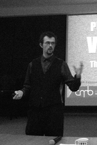
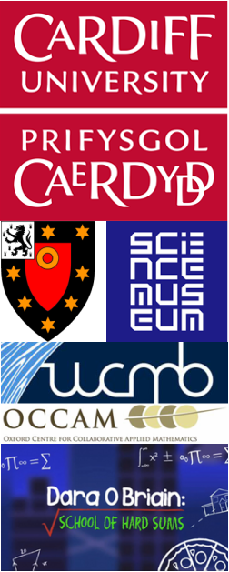

Cardiff University
Reader in Applied Mathematics. Current appointment.
Lecturer and subsequently Senior Lecturer in Applied Mathematics from 2017 until promotion to Reader.
Selected publications, employment, education, awards and former students.
This archive covers publications to 2017. My Cardiff University profile contains the current list.

Reader in Applied Mathematics. Current appointment.
Lecturer and subsequently Senior Lecturer in Applied Mathematics from 2017 until promotion to Reader.
Junior Research Fellow in Mathematics, 2013–2017. Continued research into cellular motility.
Non-Stipendiary Lecturer in Mathematics, 2010–2012. Taught applied mathematics, complex analysis and examination technique.
Fellow of Modern Mathematics, 2014–2016. Advised on the creation of two mathematics galleries.
Postdoctoral Research Assistant, 2012–2014. Worked on mechanical approaches to cellular motility.
Mathematics adviser to Dara O'Briain's School of Hard Sums, author and tutor of The Number Mysteries continuing education course, developer for the BBC miniseries The Code, illustrator of Marcus du Sautoy's The Number Mysteries, and treatment writer for The Magic of Numbers.
